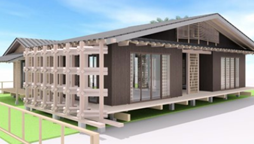
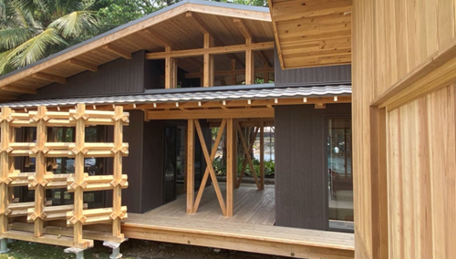
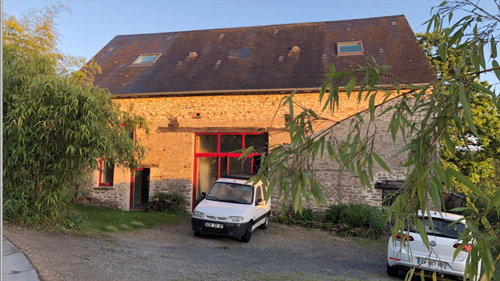

| 会社名 | 株式会社 大平洋設計事務所 |
|---|---|
| 代表名 | 橋爪 洋司（ハシヅメ ヨウジ） |
| 所在地 | 〒441-8029 愛知県豊橋市羽根井本町６９ |
沿革
| 1999年 | ・橋爪建築（工務店）設立 |
|---|---|
| 2000年 | ・2級建築士事務所 太平洋設計事務所設立 |
| 2007年 | ・1級建築士事務所へ変更 |
| 2009年 | ・建設業許可取得 |
| 2014年 | ・法人「株式会社太平洋設計事務所」となる |
| 2016年 | ・常滑市の街づくり「LOVETOKO」に参画 ・建築系大学の研究に参加 |
| 2017年 | ・タイ国 建築系大学にて「日本の木造在来工法」について講義 |
| 2018年 | ・建築系大学「日本の木材を海外で活用する研究」に参画 プロジェクト内の建築の設計と施工 ・大阪市立大学(石山准教授)の研究に参加 ・ネパール、レレ村にて、震災の復興支援 |
| 2019年 | ・産官学連携のプロジェクト〈産地直送住宅〉に参加 奈良県御杖村に体験住宅を建築 ・フランス国La Valetteにて、陶芸家Patriciaのギャラリーのリフォーム |
| 2020年 | ・産官学連携のプロジェクト〈産地直送住宅〉に参加 タイ国Sripatum大学構内に、在来木造のパビリオンの建築 |
産官学連携のプロジェクト
アジア産直住宅 -ASIA×JAPAN Housing Project-
日本国内の豊富な森林資源と優れた建築技術を活用して、アジア各国の住環境の整備と建築産業の低炭素化の推進を国際的な共同事業体によって行うプロジェクトに協力企業として参加しています。


フランスの陶芸家パトリシアのギャラリーリフォーム
パトリシアが常滑市の街づくりでリフォームした部屋で展覧会をした際、部屋の雰囲気や廃材を再利用したコンセプトを気に入ってくれたことが縁で、フランスのギャラリーのリフォームの依頼をいただきました。

建築士紹介
橋爪 洋司
1級建築士
1972年生まれ
20年の大工経験を活かしながら、一級建築士として設計を行っています。
1994年、木造大工職の見習いとして建築業界に関わり、2級建築士、2級大工技能士等を取得。
2000年、2級建築士事務所 太平洋設計事務所を設立し工務店+設計事務所となり、設計施工を行う。
2006年、1級建築士取得を機に、翌年1級建築士事務所へ変更。
2014年、株式会社 太平洋設計事務所 設立。
■資格
2級大工技能士、ヘリテイジマネージャー、玉掛技能、小型移動式クレーン、木材加工用機械等、木造建築物の組立棟、足場の組立等。
ACCESS
所在地：〒441-8029
愛知県豊橋市羽根井本町６９